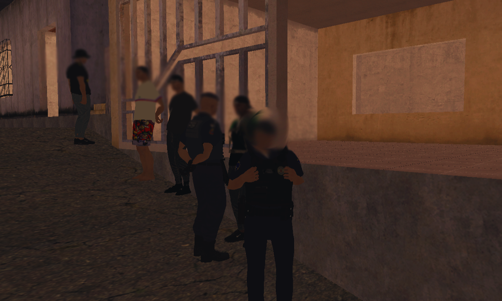

História da Polícia Militar

ORIGEM INSTITUCIONAL
A Polícia Militar tem sua estrutura fundamentada na disciplina, hierarquia e preservação da ordem pública, atuando na proteção da população e no fortalecimento da segurança coletiva.
A Polícia Militar tem sua estrutura fundamentada na disciplina, hierarquia e preservação da ordem pública, atuando na proteção da população e no fortalecimento da segurança coletiva.
DESENVOLVIMENTO OPERACIONAL
Ao longo de sua trajetória, a corporação ampliou sua organização, modernizou seus procedimentos e investiu na formação, capacitação e aperfeiçoamento de seu efetivo.
Ao longo de sua trajetória, a corporação ampliou sua organização, modernizou seus procedimentos e investiu na formação, capacitação e aperfeiçoamento de seu efetivo.
ATUAÇÃO CONTEMPORÂNEA
Atualmente, a Polícia Militar atua de forma integrada, preventiva e operacional, promovendo policiamento ostensivo, atendimento de ocorrências e ações voltadas à preservação da ordem pública.
Atualmente, a Polícia Militar atua de forma integrada, preventiva e operacional, promovendo policiamento ostensivo, atendimento de ocorrências e ações voltadas à preservação da ordem pública.